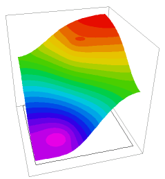

|
twoz_export |

  
|
|
twoz_export |
|
{ TWOZ_EXPORT.PDE
This script uses plate-bending equations to generate a surface that
passes through the waist of two spheres of differing Z-coordinates.
The surface is exported with TRANSFER and read into 3D problem
TWOZ_IMPORT.PDE as the layer-dividing surface.
(See "Samples | Applications | Stress | Fixed_Plate.pde" for notes on
plate-bending equations.)
} title 'Generating extrusion surfaces'
variables U,V
definitions box = 1 { bounding box size }
{ read sphere specs from file, to guarantee the same values as later including script } #include "sphere_spec.inc"
! penalty factor to force boundary compliance big = 1e6 ztable = U
equations U: del2(U) = V V: del2(V) = 0
boundaries Region 1 { The bounding box } start(-box,-box) |
 |
line to (box,-box) to (box,box) to (-box,box) to close
Region 2 { sphere 1 }
ztable = Z1 { force a clean table value inside sphere }
start (x1+1.01*R1,y1)
mesh_spacing = R1/5 { force a dense mesh on the sphere }
load(U) = 0 load(V) = big*(U-Z1)
arc(center=x1,y1) angle=360
Region 3 { sphere 2 }
ztable = Z2
start (x2+1.01*R2,y2)
mesh_spacing = R2/5 { force a dense mesh on the sphere }
load(U) = 0 load(V)= big*(U-Z2)
arc(center=x2,y2) angle=360
plots
elevation(U) from(-box,-box) to (box,box)
elevation(ztable) from(-box,-box) to (box,box)
contour(U)
surface(U)
contour(ztable) zoom(x1-1.3*R1, y1-1.3*R1, 2.6*R1,2.6*R1)
contour(ztable) zoom(x2-1.3*R2, y2-1.3*R2, 2.6*R2,2.6*R2)
transfer(ztable) file = "two_sphere.xfr"
end
Page url: index.html?usage_3d_domains_two_spheres_twoz_export.html